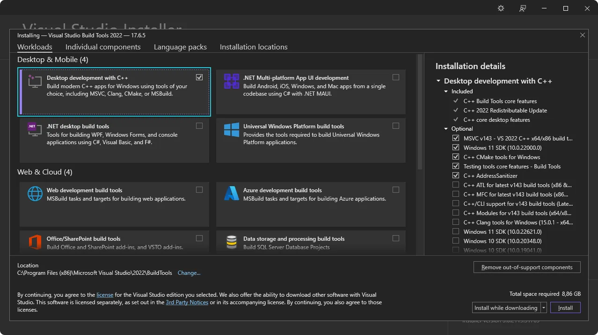

Next Steps
Now that you’ve installed all of the prerequisistes you’re ready to create your first Tauri project!
In order to get started building your project with Tauri you’ll first need to install a few dependencies:
Follow the link to get started for your respective operating system:
Tauri requires various system dependencies for development on Linux. These may be different depending on your distribution but we’ve included some popular distributions below to help you get setup.
sudo apt updatesudo apt install libwebkit2gtk-4.1-dev \ build-essential \ curl \ wget \ file \ libssl-dev \ libayatana-appindicator3-dev \ librsvg2-devsudo pacman -Syusudo pacman -S --needed \ webkit2gtk-4.1 \ base-devel \ curl \ wget \ file \ openssl \ appmenu-gtk-module \ libappindicator-gtk3 \ librsvgsudo dnf check-updatesudo dnf install webkit2gtk4.1-devel \ openssl-devel \ curl \ wget \ file \ libappindicator-gtk3-devel \ librsvg2-develsudo dnf group install "C Development Tools and Libraries"sudo emerge --ask \ net-libs/webkit-gtk:4.1 \ dev-libs/libappindicator \ net-misc/curl \ net-misc/wget \ sys-apps/filesudo zypper upsudo zypper in webkit2gtk3-devel \ libopenssl-devel \ curl \ wget \ file \ libappindicator3-1 \ librsvg-develsudo zypper in -t pattern devel_basisTODO: Need to build out NixOS instructions
If your distribution isn’t included above then you may want to check Awesome Tauri on GitHub to see if a guide has been created.
Next: Install Rust
Tauri uses Xcode and various macOS and iOS development dependencies.
Download and install Xcode from one of the following places:
Be sure to launch Xcode after installing so that it can finish setting up.
Only developing for desktop targets?
If you’re only planning to develop desktop apps and not targeting iOS then you can install Xcode Command Line Tools instead:
xcode-select --installNext: Install Rust
Tauri uses the Microsoft C++ Build Tools for development as well as Microsoft Edge WebView2. These are both required for development on Windows.
Follow the steps below to install the required dependencies.

Next: Install WebView2.
Tauri uses Microsoft Edge WebView2 to render content on Windows.
Install WebView2 by visiting the WebView2 Runtime download section. Download the “Evergreen Boostrapper” and install it.
Next: Install Rust
Tauri is built with Rust and requires it for development. Install Rust using one of following methods. You can view more installation methods at https://www.rust-lang.org/tools/install.
Install via rustup using the following command:
curl --proto '=https' --tlsv1.2 https://sh.rustup.rs -sSf | shVisit https://www.rust-lang.org/tools/install to install rustup.
Be sure to restart your Terminal (and in some cases your system) for the changes to take affect.
Next: Configure for Mobile Targets if you’d like to build for Android and iOS, or, if you’d like to use a JavaScript framework, install Node. Otherwise Create a Project.
Go to Node.js website, download the Long Term Support (LTS) version and install it.
Check if Node was succesfully installed by running:
node -v# v20.10.0npm -v# 10.2.3It’s important to restart your Terminal to ensure it recognizes the new installation. In some cases, you might need to restart your computer.
While npm is the default package manager for Node.js, you can also use others like pnpm or yarn. To enable these, run corepack enable in your Terminal. This step is optional and only needed if you prefer using a package manager other than npm.
Next: Configure for Mobile Targets or Create a project.
If you’d like to target your app for Android or iOS then there are a few additional dependencies that you need to install:
JAVA_HOME environment variable:export JAVA_HOME=/opt/android-studio/jbrexport JAVA_HOME="/Applications/Android Studio.app/Contents/jbr/Contents/Home"[System.Environment]::SetEnvironmentVariable("JAVA_HOME", "C:\Program Files\Android\Android Studio\jbr", "User")Selecting “Show Package Details” in the SDK Manager enables the installation of older package versions. Only install older versions if necessary, as they may introduce compatibility issues or security risks.
ANDROID_HOME and NDK_HOME environment variables.export ANDROID_HOME="$HOME/Android/Sdk"export NDK_HOME="$ANDROID_HOME/ndk/$(ls -1 $ANDROID_HOME/ndk)"export ANDROID_HOME="$HOME/Library/Android/sdk"export NDK_HOME="$ANDROID_HOME/ndk/$(ls -1 $ANDROID_HOME/ndk)"[System.Environment]::SetEnvironmentVariable("ANDROID_HOME", "$env:LocalAppData\Android\Sdk", "User")$VERSION = Get-ChildItem -Path "$env:LocalAppData\Android\Sdk\ndk"[System.Environment]::SetEnvironmentVariable("NDK_HOME", "$env:LocalAppData\Android\Sdk\ndk\$VERSION", "User")rustup:rustup target add aarch64-linux-android armv7-linux-androideabi i686-linux-android x86_64-linux-androidNext: Setup for iOS or Create a project.
rustup in Terminal:rustup target add aarch64-apple-ios x86_64-apple-ios aarch64-apple-ios-sim/bin/bash -c "$(curl -fsSL https://raw.githubusercontent.com/Homebrew/install/HEAD/install.sh)"brew install cocoapodsNext: Create a project.
If you run into any issues during installation be sure to check the Troubleshooting Guide or reach out on the Tauri Discord.
Next Steps
Now that you’ve installed all of the prerequisistes you’re ready to create your first Tauri project!
© 2024 Tauri Contributors. CC-BY / MIT